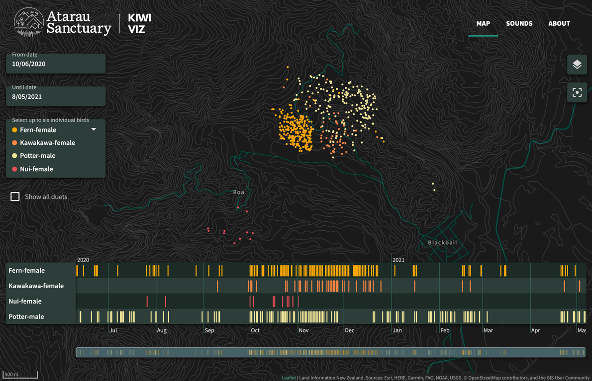
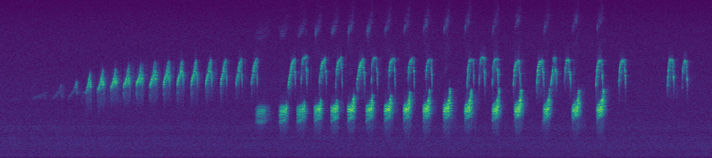
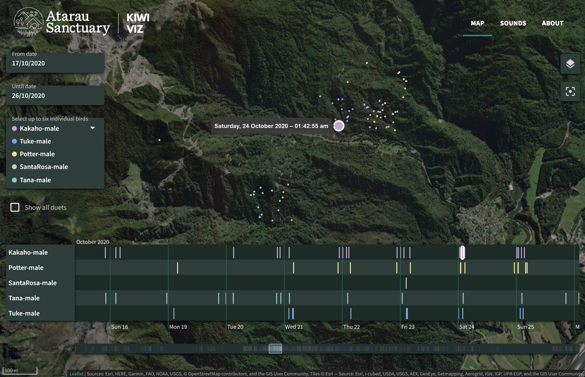
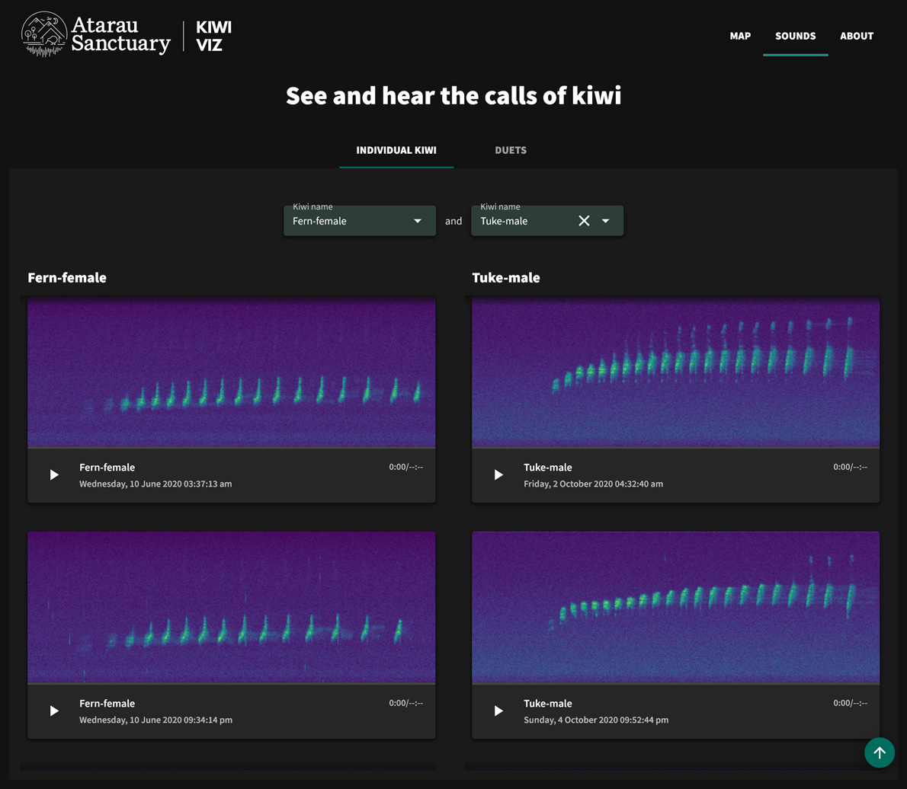
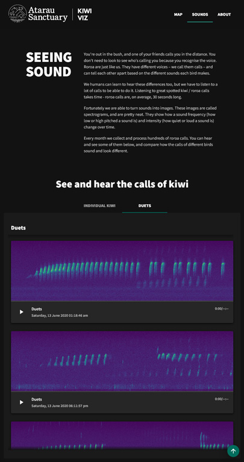

<!DOCTYPE html><html class="no-js" lang="en"><head>
    <meta charset="utf-8">
    <title>Kiwi Visualisation | Portfolio | Sara Coutinho - Interaction designer and developer</title>
    <meta name="description" content="Uncovering what New Zealand's favourite bird does in the shadows">
    <meta name="viewport" content="width=device-width, initial-scale=1">
    <link rel="preconnect" href="https://fonts.gstatic.com">
<link href="https://fonts.googleapis.com/css2?family=Lora:ital,wght@1,400;1,700&amp;family=Mulish:wght@300;400;600&amp;display=swap" rel="stylesheet">

<link rel="stylesheet" href="../css/main.css">
	<link type="text/css" rel="stylesheet" href="../css/portfolio.css">

</head>
<body>
<div id="main" class="portfolio-item-page-wrapper kiwiviz">
    
<header id="main-header">
	<div class="content">
		<a href="../" class="logo-inline">Sara Coutinho</a>
		<nav class="nav-main" id="main-menu">
			<ul>
				<li class="about">
					<a href="../about">
						<span class="title">About me</span>
						<span class="caption">A brief intro</span>
					</a>
				</li>
				<li class="skills">
					<a href="../what-i-do">
						<span class="title">What I do</span>
						<span class="caption">Process &amp; Skills</span>
					</a>
				</li>
				<li class="portfolio portfolio-page">
					<a href="\portfolio\" class="selected">
						<span class="title">Work</span>
						<span class="caption">Portfolio</span>
					</a>
                    <ul class="sub-menu">
                        <li>
                            <a href="kiwiviz" class="selected">KiwiViz</a>
                        </li>
                        <li>
                            <a href="cacophony">Cacophony</a>
                        </li>
                        <li>
                            <a href="ws">WhereScape</a>
                        </li>
                        <li>
                            <a href="trimble">Trimble</a>
                        </li>
                        <li>
                            <a href="tvn">TVN</a>
                        </li>
                        <li>
                            <a href="bird-counter">Bird Counter</a>
                        </li>
                    </ul>
				</li>
				<li class="scrapbook">
					<a href="http://scrapbook.saracoutinho.co.nz" target="_blank" rel="nofollow">
						<span class="title">Scrapbook</span>
						<span class="caption">The inspiration stream</span>
					</a>
				</li>
				<li class="contact">
					<a href="../contact">
						<span class="title">Contact</span>
						<span class="caption">Say hi</span>
					</a>
				</li>
			</ul>
			<button class="trigger" id="menu-hide">Close</button>
		</nav>
		<button class="trigger" id="menu-show">Menu</button>
	</div>
</header>    <div class="project">
        <article id="introduction">
            <nav class="project-nav" id="project-nav">
                <ul>
                    <li>
                        <a href="#introduction">Introduction</a>
                    </li>
                    <li>
                        <a href="#background">Background</a>
                    </li>
                    <li>
                        <a href="#challenge">Challenge</a>
                    </li>
                    <li>
                        <a href="#process">Process</a>
                    </li>
                    <li>
                        <a href="#solution">Solution</a>
                    </li>
                    <li>
                        <a href="#results">Results</a>
                    </li>
                </ul>
            </nav>
            <header class="project-intro">
                <div class="logo tvn-logo">
                    
                </div>
                <h1>Uncovering what New Zealand's favourite bird does in the shadows</h1>
                <p class="lead">Did you know that we can identify individual birds based on their songs? The Verum Group is developing a set of deep learning techniques to identify individual birds within a species through their songs, and these techniques have been successfully applied to great spotted kiwi (roroa). This is pretty amazing work and we wanted to share the results with the world in a way that is easy to understand and interact with. I proposed developing a visualisation that, combined with a sister site, shows and explains the amazing work being developed.</p>

                <p class="visit-wrapper">
                    <a class="btn-link" href="https://kiwiviz.atarausanctuary.co.nz" target="_blank">View interactive visualisation</a>
                </p>

                <div class="media-wrapper">
                    <div class="surface-pro">
                        
                    </div>
                </div>

                <div class="info">
                    <dl>
                        <dt>Client</dt>
                        <dd>Atarau Sanctuary</dd>
                        <dd>Verum Group</dd>

                    </dl>
                    <dl>
                        <dt>Role</dt>
                        <dd>Interactive design</dd>
                        <dd>Interactive development</dd>

                    </dl>

                    <dl>
                        <dt>Date</dt>
                        <dd>2021-2022</dd>
                    </dl>

                </div>
            </header>

            <div class="project-content">

                <h2 id="background">Background</h2>
                <p>Atarau Sanctuary provides a predator-free sanctuary for Paparoa Wildlife Trusts great spotted kiwi/roroa. Verum Group, the environmental consultancy that sponsors the sanctuary, is developing a set of deep learning techniques to identify individual birds within a species through their songs. These techniques have been successfully applied to roroa calls collected within and near the sanctuary.</p>
                <p>This is pretty amazing work that is using cutting edge techniques, developed by the Verum team. We wanted to share the results and the science with the world in a way that is easy to interact with and communicate the results with a wider audience.</p>
                <p>Following a previous engagement with Verum, I proposed developing a custom interactive visualisation that maps kiwi calls collected over a year and allows users to see how many different individual kiwi are in an area, how far they roam and who they are interacting with. Users can also see and hear different kiwi calls and see how each individual has its own distinctive sound patterns.</p>

            </div>

               <!-- <div class="media-wrapper">
                    <figure>
                        <figcaption class="description">Below is a spectrogram, a visual representation of sound over time. Time is represented from left to right; pitch (how bassy or high-pitched a sound is) from bottom to top; and amplitude (how loud a sound is) is represented by the colours, with brighter colors representing louder sounds are two roroa &ndash; a male and a female &ndash; dueting.</figcaption>
                        
                    </figure>
                </div>-->


            <div class="project-content wide">
                <p class="description">Below is a spectrogram, a visual representation of sound over time. Time is represented from left to right; pitch (how bassy or high-pitched a sound is) from bottom to top; and amplitude (how loud a sound is) is represented by the colours, with brighter colors representing louder sounds. Here we can see two roroa  a male and a female  dueting.</p>
                <div class="media-wrapper">
                    

                </div>

            </div>

            <div class="project-content">

                <h2 id="challenge">Challenge</h2>

                <p>This was one of the rare projects where I was allowed to take full control of the project and make it happen. I had already made an app similar in concept using R and R Shiny, but a custom web app opened a whole new world of possibilities. We knew that from a functionality point of view there were a few must haves. We wanted users to be able to:</p>

                <ul>
                    <li>See the range of different birds;</li>
                    <li>See and hear the calls of different birds and compare them;</li>
                    <li>View how the singing frequency changes over time;</li>
                    <li>Check if different birds interact with each other and sing at similar times.</li>
                </ul>

            </div>


            <div class="project-content wide">
                <p class="description">Onboarding new users to the map view of the visualisation.</p>
                <div class="media-wrapper">
                    <video controls="" poster="../images/portfolio/kiwiviz/kiwiviz-onboarding-poster.png">
                        <source src="../images/portfolio/kiwiviz/kiwiviz-onboarding.mp4" type="video/mp4">
                        Your browser does not support the video tag.
                    </video>
                </div>

            </div>

            <div class="project-content">

                <h2 id="process">Process</h2>

                <h3>Data wrangling</h3>

                <p>The team at the Atarau Sanctuary has collected hours and hours of audio and selected the best roroa calls for the visualisation. I've manipulated and extended the provided data to:</p>
                <ul>
                    <li>Change the data structure and format, making it suitable for a web application.</li>
                    <li>Position the calls in space based on a predefined area, using ArcGis Pro.</li>
                    <li>Process the audio files using Adobe Audition to remove background noise and trim additional silence.</li>
                </ul>

            </div>

            <div class="project-content wide">
                <p class="description">The map view, showing an alternative basemap where users can see the terrain and landscape of the sanctuary. Note the timeline, showing the time and date of the calls, and how a call in the timeline gets highlighted when a marker on the map is hovered.</p>
                <div class="media-wrapper">
                    

                </div>

            </div>

            <div class="project-content">

                <h2 id="solution">Solution</h2>

                <h3>Design and development</h3>

                <p>We settled on two main areas for the application: a Map view and a Sounds view.
                </p><p>The Map view allows users to view calls of different kiwi, and infer the birds' ranges from these. The mapped calls are also linked to a timeline, and this provides extra insights into the activities of kiwi  do they sing all year round? Do they have a partner, and do they often sing together?</p>
                <p>The Sounds view highlights the accuracy of the technology being developed by Verum, and shows how different birds have calls that are visually (and audibly) different. Users can compare the calls of different birds, and see how they have different voices  and also how female birds are much bassy than males.
                </p>
                <p></p>

            </div>

            <div class="project-content wide">
                <p class="description">Because roroa are nocturnal, I proposed a dark theme for the application. The Sounds page allows users to play calls of roroa and compare how the sounds of different birds <em>look</em> different. Special thanks to <a href="https://www.jonathanhardie.com/" target="_blank" rel="nofollow">Jonathan Hardie</a> for the custom spectrogram.</p>
                <div class="media-wrapper">
                    

                    
                </div>

            </div>


            <div class="project-content">

                <h2 id="results">Results</h2>

                <p>KiwiViz successfully showcases the unique work being developed by the team at Verum and communicates the science behind the project in a tangible way.</p>
                <p>I can't stress enough how much work went into the individual bird identification project  from the grunt work of collecting audio recordings, to automating the calls extraction and the development of the deep learning techniques. This visualisation is only a small part of it.</p>
                <p>I'd like to thank Verum Group  in particular Laura Molles  for agreeing to this project, and to the Brian Mason Scientific &amp; Technical Trust for funding it.</p>

            </div>


            <div class="project-content wide">
                <p class="description">A quick demo of the map view.</p>
                <div class="media-wrapper">
                    <video controls="" poster="../images/portfolio/kiwiviz/kiwiviz-demo-poster.jpg">
                        <source src="../images/portfolio/kiwiviz/kiwiviz-demo.mp4" type="video/mp4">
                        Your browser does not support the video tag.
                    </video>
                </div>

            </div>


        </article>
    </div>
    
<div class="portfolio-preview">
	<div class="item previous"></div><div class="item next"><h6><a href="cacophony"><span>Next project</span>Cacophony Continuous Improvements</a></h6></div>
	<div class="item back">
	    <h6>
            <a href="\portfolio\"><span>Back to</span>Portfolio</a>      
        </h6>	
	</div></div>
</div>
<script src="../scripts/analytics.js"></script>
<script type="text/javascript">
    window.addEventListener("load", function () {
        let mainMenu = document.getElementById("main-menu") || "";
        let menuTrigger = document.getElementById("menu-show") || "";
        let menuClose = document.getElementById("menu-hide") || "";

        function toggleMenuClass() {
            if (mainMenu.classList.contains("selected")) {
                mainMenu.classList.remove("selected");
            } else {
                mainMenu.classList.add("selected");
            }
        }

        menuTrigger.onclick = toggleMenuClass;
        menuClose.onclick = toggleMenuClass;


        let mainHeader = document.getElementById("main-header");
        let previousScrollPosition = window.pageYOffset;

        if (window.pageYOffset >= 68) {
            positionHeader();
        }

        function positionHeader() {
            if (window.pageYOffset >= 68) {
                let currentScrollPosition = window.pageYOffset;

                if (!mainHeader.classList.contains("show-on-scroll-up")) {
                    mainHeader.classList.add("show-on-scroll-up");
                }

                if (previousScrollPosition > currentScrollPosition) {

                    if (mainHeader.classList.contains("hide")) {
                        mainHeader.classList.remove("hide");
                    }

                } else {
                    if (!mainHeader.classList.contains("hide")) {
                        mainHeader.classList.add("hide");
                    }

                }
                previousScrollPosition = currentScrollPosition;
            } else {

                if (mainHeader.classList.contains("show-on-scroll-up")) {
                    mainHeader.classList.remove("show-on-scroll-up");
                }
                if (mainHeader.classList.contains("hide")) {
                    mainHeader.classList.remove("hide");
                }
            }
        }

        window.onscroll = positionHeader;

    });
</script>

<script src="../scripts/plugins/menuspy/menuspy.min.js"></script>
<script>
    if (window.matchMedia('(min-width: 1280px)').matches) {
        let elm = document.querySelector('#project-nav');
        let ms = new MenuSpy(elm, {
            enableLocationHash: false
        });
    }
</script>

</body></html>